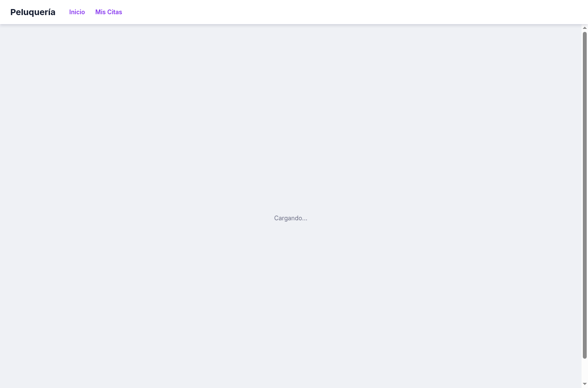
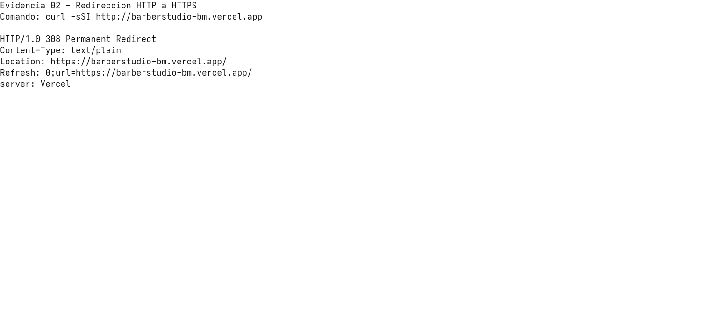
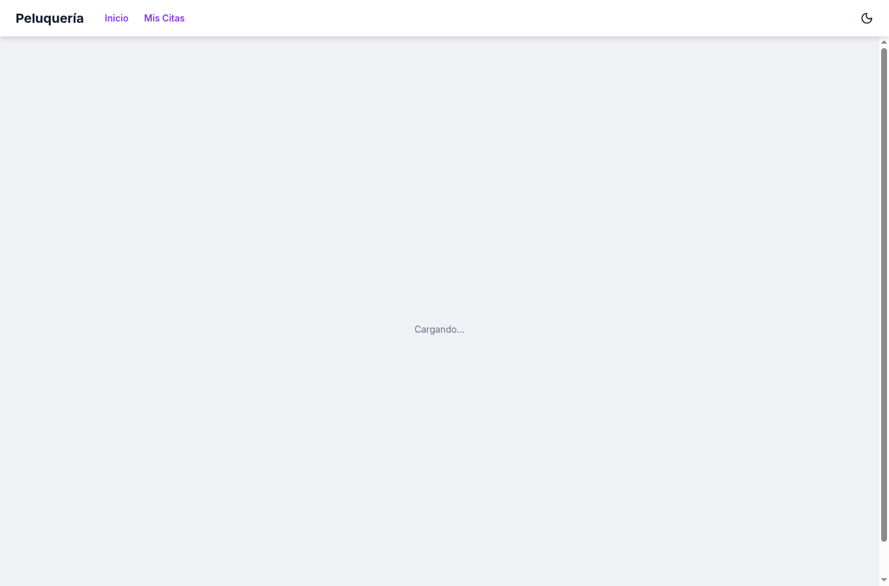

Solucion del Taller - Seguridad en PWA
Proyecto trabajado: Kawz Barber Studio, una PWA de reservas para barberia. Despliegue de referencia: https://barberstudio-bm.vercel.app.
El taller se resolvio aplicando controles reales en la aplicacion y documentando las evidencias
de implementacion. Las capturas se guardaron en la carpeta images/ y se referencian
en este documento.
Resumen de actividades implementadas
| Actividad | Implementacion | Evidencia |
|---|---|---|
| 1. Certificados digitales SSL/TLS | Despliegue por HTTPS en Vercel, con HSTS y redireccion desde HTTP. | Imagenes 01, 03 y 04 |
| 2. Validacion y saneamiento de formularios | Validacion en cliente y servidor; normalizacion, limites de longitud, email, fechas, numeros y texto seguro. | Imagen 06 |
| 3. Content Security Policy | CSP con nonces por respuesta, hash SHA-256, strict-dynamic, tipos de recursos y bloqueo de objetos. |
Imagenes 05 y 07 |
| 4. HTTPS obligatorio para recursos | upgrade-insecure-requests, Strict-Transport-Security y redireccion 308 a HTTPS. |
Imagenes 04 y 05 |
1. Certificados digitales SSL/TLS
La PWA esta desplegada en Vercel usando el dominio
https://barberstudio-bm.vercel.app.
Vercel entrega la aplicacion por HTTPS y gestiona el certificado TLS del dominio
vercel.app. Esto permite cifrar el trafico entre cliente y servidor.
Se verifico que el sitio responde por HTTPS y que el servidor envia
Strict-Transport-Security, lo que indica que los navegadores deben preferir HTTPS.

2. Validacion y saneamiento de campos de formulario
Se agrego una capa central de saneamiento en Convex, ubicada en
packages/backend/convex/security.ts. Esta capa aplica:
- Normalizacion Unicode con
NFKC. - Eliminacion de caracteres de control.
- Eliminacion de los caracteres
<y>para reducir riesgo de inyeccion HTML/XSS. - Compactacion de espacios.
- Limites de longitud por campo.
- Validacion estricta de correos, fechas y numeros enteros.
Esta validacion se usa en mutaciones de servidor que reciben datos desde formularios:
packages/backend/convex/users.ts: normalizacion y validacion del email de barberos.packages/backend/convex/services.ts: saneamiento de nombre y descripcion de servicios; validacion de precio y duracion.packages/backend/convex/blocks.ts: validacion de fecha y saneamiento de motivo de bloqueo.packages/backend/convex/appointments.ts: validacion de fecha y saneamiento del motivo de cancelacion.
Tambien se agrego validacion del lado cliente en formularios visibles:
apps/web/src/routes/admin/index.tsx: email con patron, longitud maxima y normalizacion.apps/web/src/routes/admin/services.tsx: nombre, descripcion, precio y duracion.apps/web/src/routes/index.tsx: motivo de cancelacion saneado antes de enviarse.
3. Politicas de Seguridad de Contenido (CSP)
La CSP se implemento en apps/web/server.ts, envolviendo la respuesta generada por
TanStack Start. Para evitar romper la aplicacion con una politica estricta, el servidor genera
un nonce criptografico por respuesta y lo inyecta en las etiquetas
<script> del HTML.
3.1 Control de carga de recursos para prevenir XSS
Se definio default-src 'self' como politica por defecto y
script-src con nonce, hash y strict-dynamic. Esto evita que scripts
inyectados sin nonce o hash valido se ejecuten.
default-src 'self';
script-src 'nonce-{valor-dinamico}' 'sha256-x1re2lJCbJLUlWV3fFbi1/CEPWb0ZexeffK5gyjy6bw=' 'strict-dynamic' https:;3.2 Control por tipos de recursos
La CSP separa los tipos de recursos principales:
style-src: permite estilos propios, estilos inline necesarios para la UI y Google Fonts.img-src: permite imagenes propias,data:,blob:y recursos HTTPS.font-src: permite fuentes propias,data:yhttps://fonts.gstatic.com.connect-src: permite conexiones propias, HTTPS y WebSocket seguro.manifest-srcyworker-src: restringidos a'self'.
3.3 Bloqueo de objeto especifico
Se bloqueo la carga de objetos embebidos con object-src 'none'.
Esta directiva bloquea recursos como <object>, <embed>
y contenido plugin heredado que puede abrir vectores de ataque.
3.4 Hash para asegurar el origen de un script especifico
Se creo el archivo apps/web/public/security-policy-marker.js y se incluyo en el
documento con atributo integrity. Su hash SHA-256 tambien fue agregado a la CSP:
sha256-x1re2lJCbJLUlWV3fFbi1/CEPWb0ZexeffK5gyjy6bw=De esta forma, el navegador solo acepta ese script especifico si el contenido coincide con el hash declarado.
3.5 Politicas basadas en esquema o ubicacion
La politica combina origen propio, ubicaciones concretas y esquemas seguros:
'self'para recursos propios.https:para imagenes y conexiones externas seguras.https://fonts.googleapis.comyhttps://fonts.gstatic.compara fuentes.form-action 'self' https:para limitar envios de formularios.
3.6 Control estricto y strict-dynamic
Se aplico una CSP estricta basada en nonce dinamico y hash. La directiva
strict-dynamic permite que la confianza del script con nonce/hash se propague a
scripts que ese script cargue de forma legitima, evitando depender unicamente de listas largas
de dominios.
4. HTTPS obligatorio para recursos de la PWA
Se aplicaron tres mecanismos para mantener HTTPS obligatorio:
upgrade-insecure-requestsen CSP: actualiza recursos HTTP a HTTPS cuando es posible.Strict-Transport-Security: indica al navegador que use HTTPS para el dominio.- Redireccion 308 desde HTTP hacia HTTPS cuando la peticion llega con protocolo inseguro fuera de localhost.
El despliegue de Vercel tambien responde con redireccion desde HTTP hacia HTTPS, como se evidencia en la siguiente captura.

Resultado final
La PWA queda protegida con HTTPS/TLS, saneamiento de datos en cliente y servidor,
politicas CSP por tipo de recurso, bloqueo de objetos, hash de script, politicas por
esquema/ubicacion, CSP estricta con strict-dynamic y mecanismos para evitar
contenido mixto.

Archivos modificados
apps/web/server.tsapps/web/src/routes/__root.tsxapps/web/public/security-policy-marker.jsapps/web/src/routes/admin/index.tsxapps/web/src/routes/admin/services.tsxapps/web/src/routes/index.tsxpackages/backend/convex/security.tspackages/backend/convex/users.tspackages/backend/convex/services.tspackages/backend/convex/blocks.tspackages/backend/convex/appointments.ts
Verificacion realizada
bun run --filter web build: exitoso.bunx tsc --noEmit --project packages/backend/convex/tsconfig.json: exitoso.bun run check-types: no finalizo por errores preexistentes enpackages/ui, no relacionados con este taller.